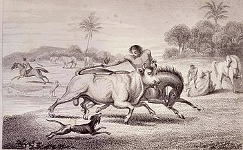

La zona geográfica que hoy conocemos como departamento de Arauca, durante la Colonia y en la época republicana hasta 1.911, perteneció políticamente a la región de los Llanos bajo la Audiencia de Tunja, al Estado Soberano de Boyacá, a la Provincia de Casanare y al Departamento de Boyacá. En el año citado se creó la Comisaría Especial de Arauca, segregándola de Boyacá, vigente hasta 1.953, cuando se creó la Intendencia Nacional de Arauca, que dejó de existir en 1.991 al entrar en vigencia la actual Constitución Política. La ciudad de Arauca es la capital regional desde 1.911. En 1.628 en Tame empieza la colonización española que se prolonga hasta la fundación de la República.

Para el año 1985, el Presidente Belisario Betancur Cuartas aprobó el Presupuesto de Rentas y Gastos para la Intendencia Nacional de Arauca por 360 millones de pesos, expedido por el Consejo Intendencial el año anterior. En el año 2004, la Asamblea Departamental ha aprobado ajustes y adiciones presupuestales hasta completar 325 mil millones de pesos para la vigencia fiscal del año 2004. Comparando los presupuestos podemos decir que hay mil veces más recursos para el día, el año y el futuro. Para esa fecha, sin regalías, se había completado la carretera Tame – Casanare y construido el puente en La Cabuya.
Con los recursos de las regalías, el cambio se dio en la red vial, tendido de redes eléctricas y ampliación de la matrícula escolar con la vinculación de centenares de docentes llegados de todo el país, atención médico – odontológica, créditos para estudio, vivienda y empresa pecuaria. En el maremagnum de la inmigración, el gobierno de Arauca tuvo que recibir y proteger, a partir del año 1985, a las gentes que llegaron y luego a sus hijos, que son araucanos y que, como sus padres le deben a este año todo lo que representa organizar una vida. En el año 2003 el censo poblacional de la capital de Arauca se estimó en 85 mil habitantes, 64 mil en la zona urbano y 21 mil en la rural, y se registra el progreso urbano como en los otros seis municipios. Una docena de caseríos apareció en el Sarare y los ríos Arauca y Casanare se comunicaron por carretera asfaltada.
La extracción del petróleo comenzó en 1.985 pero el año anterior, el 14 de abril, las incipientes instalaciones sufrieron el primer atentado terrorista. Sin el petróleo, probablemente Arauca estaría cuarenta años atrás. Cravo Norte, Puerto Rondón, Arauquita y Tame no habrían despertado a las salas de computadores en sus colegios, aunque no tendrían tampoco las cicatrices de otra guerra más despiadada e injusta que la de los años que no se contaron. Hoy Arauca proyecta su futuro con base en los valores humanos más que en millones de pesos.